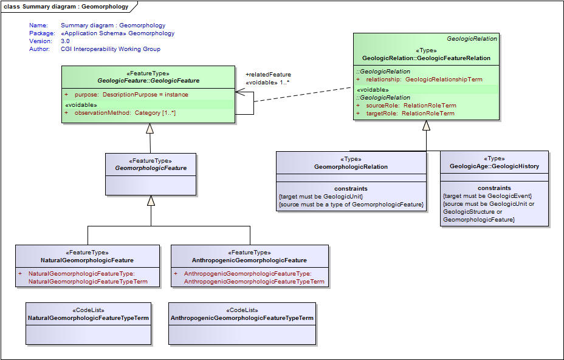
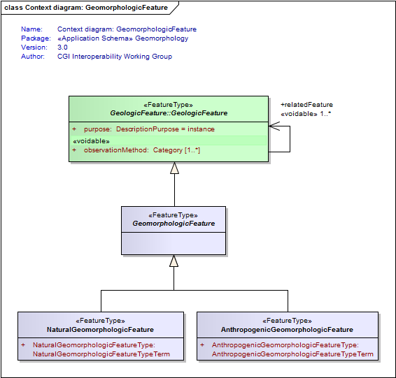
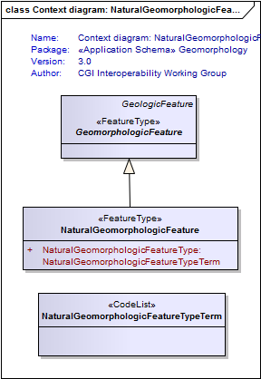
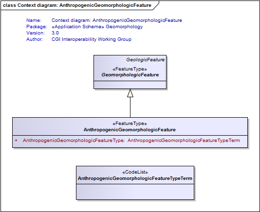
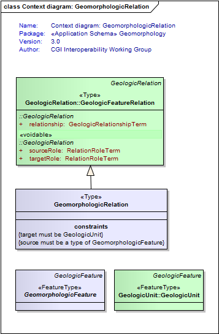

Package Geomorphology
The Geomorphology package describes features that comprise the shape and nature of the Earth's land surface (ie, landforms). These landforms may be created by natural Earth processes (eg, river channel, beach, moraine, mountain) or through human (anthropogenic) activity (eg, dredged channel, reclaimed land, mine waste dumps).
Class Summary |
|
| <<FeatureType>> Classes | |
AnthropogenicGeomorphologicFeature
<<FeatureType>>
|
A geomorphologic feature (ie, landform) which has been created by human activity. For example, dredged channel, midden, open pit, reclaimed land. |
GeomorphologicFeature
<<FeatureType>>
|
A feature describing the shape and nature of the Earth's land surface (ie, a landform). These landforms may be created by natural Earth processes (eg, river channel, beach, moraine, mountain) or through human (anthropogenic) activity (eg, dredged channel, reclaimed land, mine waste dumps). |
NaturalGeomorphologicFeature
<<FeatureType>>
|
A geomorphologic feature (ie, landform) that has been created by natural Earth processes. For example, river channel, beach ridge, caldera, canyon, moraine, mud flat. |
| <<Type>> Classes | |
GeomorphologicRelation
<<Type>>
|
Use this association to relate a geomorphologic feature (ie, a landform) to a geologic unit which describes the surficial regolith materials which comprise or lie beneath the landform surface. |
| <<CodeList>> Classes | |
AnthropogenicGeomorphologicFeatureTypeTerm
<<CodeList>>
|
Refers to a vocabulary of terms describing the type of anthropogenic geomorphologic feature |
NaturalGeomorphologicFeatureTypeTerm
<<CodeList>>
|
Refers to a vocabulary of terms describing the type of natural geomorphologic feature |
Tagged Values |
||
| Tag | Value | Notes |
| classMap | https://www.seegrid.csiro.au/subversion/GeoSciML/geomorphology/trunk/classmap/ClassMap_Geomorphology_GeoSciML_v3.xml | |
| gmlProfileSchema | #NOTES#Description: URL of the schema location of a GML profile (optional) | Description: URL of the schema location of a GML profile (optional) |
| owner | IUGS Commission for the Management and Application of Geoscience Information | |
| schemaLocation | http://schemas.geosciml.org/geomorphology/3.0/geomorphology.xsd | |
| targetNamespace | http://xmlns.geosciml.org/Geomorphology/3.0 | Default: FIXME Description: Target XML namespace of the application schema |
| version | 3.0.0 | Default: FIXME Description: Current version of the application schema |
| xmlns | gsmlgm | Default: FIXME Description: Namespace prefix to be used as short form of the target namespace |
| xsdDocument | geomorphology.xsd | Default: FIXME Description: Name of an XML Schema document to create representing the content of this package |
| xsdEncodingRule | iso19136_2007_INSPIRE_Extensions | Values: iso19136_2007 | iso19139_2007 | iso19136_2007_INSPIRE_Extensions Default: iso19136_2007 Description: XML Schema encoding rule to apply |
UML Diagram: Summary diagram : Geomorphology

UML Diagram: Context diagram: GeomorphologicFeature

UML Diagram: Context diagram: NaturalGeomorphologicFeature

UML Diagram: Context diagram: AnthropogenicGeomorphologicFeature

UML Diagram: Context diagram: GeomorphologicRelation
